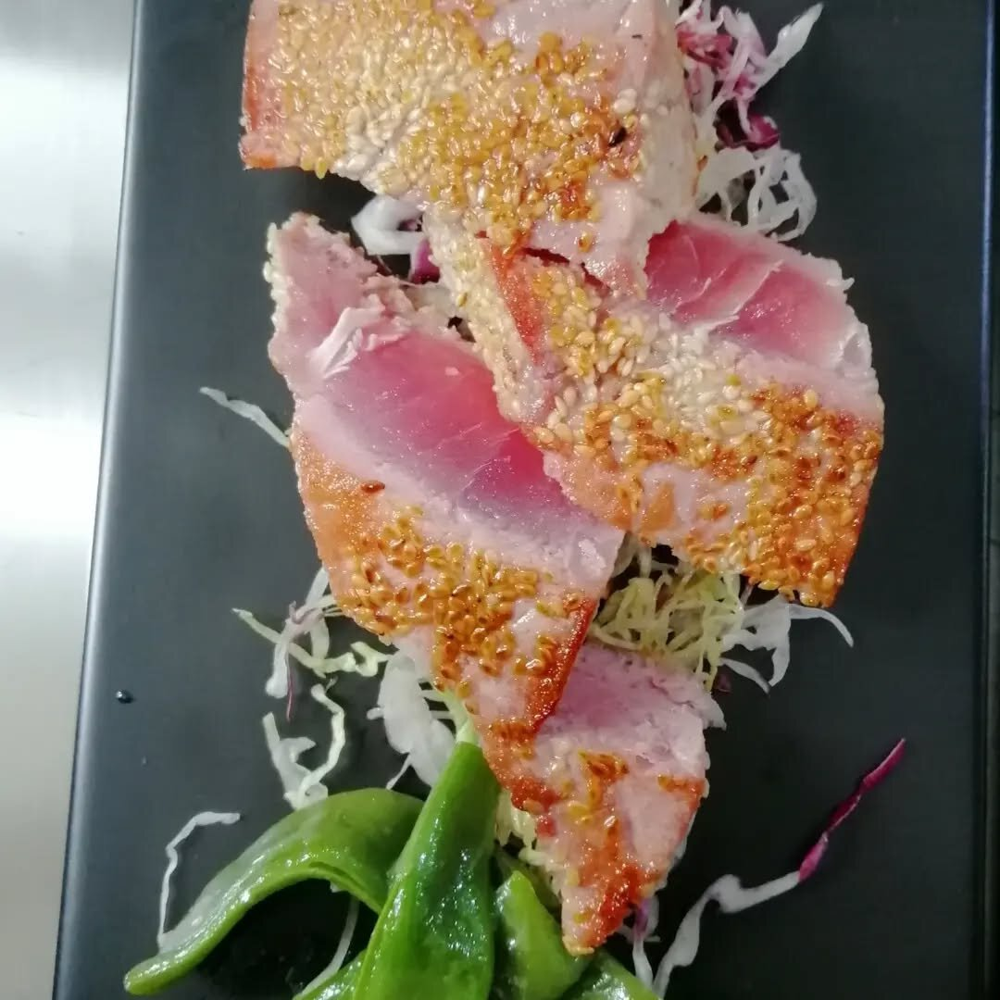

Il nostro menu
I Piatti
della Casa

Secondo · Pesce
Tataki di Tonno
Tonno rosso scottato in crosta di sesamo, foglie di bietola, mirtilli e gocce di emulsione agrumata.

Antipasto · Crudo
Crudités di Mare
Selezione di carpacci, salmone marinato in casa, polpo e gamberi rossi del Mediterraneo.

Antipasto · Crudo
Tartare di Pesce
Tartare del pescato del giorno su letto di cavolo rosso, corona di patate sottili e fritte al momento.

Antipasto · Crudo
Gamberi al Pistacchio
Gamberi rossi con granella di pistacchio di Bronte, carote glassate, salsa al pisello e pomodoro.

Antipasto · Terra
Carpaccio di Cinghiale
Carpaccio di cinghiale con balsamico, fichi maturi e mousse di ricotta — l'unico piatto di terra del menu.

Antipasto · Mare
Gamberi e Finocchi
Gamberi pepati su insalata di finocchi e basilico fresco, serviti su pietra di Calabria.

Secondo · Pesce
Gamberoni Saltati
Gamberoni interi saltati al pepe rosa, riduzione agrumata e gocce di salsa al lampone.

Secondo · Pesce
Tonno al Sesamo
Tataki al sesamo tostato con peperoni verdi croccanti, cavolo rosso e germogli marinati.